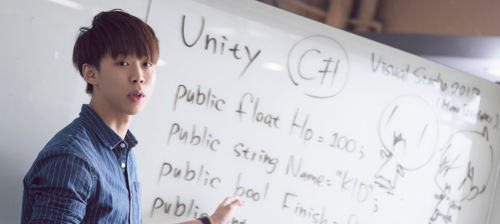
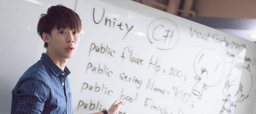

赫綵設計學院
台灣設計教育品牌 頂尖人才誕生地
從0到100的淬煉，是我們的專長
赫綵設計學院自2011年成立至今，在全台擁有五所學院據點，共開設16門專業課程，包括視覺設計、數位繪畫、網頁設計、UI設計、影視特效、2D動畫、室內設計......等課程，教室皆配置高規格電腦設備Apple蘋果電腦與工作站等級PC電腦，為學生建立最有效率的學習環境。數以千計的學員從這裡帶著自己的作品集成功進入設計圈，學員的優秀成果使我們成為設計教育業的口碑品牌領導者。
 

4 大系列、 16 門設計課程，為您量身訂做技能方向
每年以最新最熱門的技術為導向重新編課，讓學生都能學到第一線的設計方法，以設計即戰力—學完立即就能投入職場的戰鬥力為學習目標。學習設計與學習軟體不同，堅持聘請擁有實戰經驗與創意想法的資深設計師為課程講師，讓學生在課堂能一舉學到創意思考與設計技巧。
商業視覺系列Graphic
- 商業平面設計
- 數位繪畫
- 前端網頁設計
- 工業產品設計
- UI 介面設計
影視特效系列Film / Effects
- 商業攝影
- 微電影導演
- AE 影視特效實戰
- 數位成音班
遊戲動畫系列Game / Animation
- 2D 動畫製作
- Unity App 遊戲製作
- 遊戲美術企劃
室內空間系列Interior
- AutoCad設計實務
- 室內設計實務
- 3D 空間建模彩現
- 室內設計乙級認證班
- 3D 空間高精仿真
“ 在赫綵 不只學習 ”
定期舉辦各類講座與活動
每年定期舉辦名人講座，也會與各大學合作舉辦設計講座，致力邀請在設計圈具有影響力的知名設計師，與學員分享心路歷程與設計相關知識，給予信心與鼓勵，同時也能為學員拓展視野，強化設計職能，提升對新技術的掌握能力。
除了認真上課，也有放鬆好玩的活動。慶生抽獎、節慶派對、講師茶會、校外教學、學員聚餐等等，學員可以透過活動拓展人脈，參加者除了設計圈、也包括各行各業的專業人士。
國際姐妹校
積極拓展國際姐妹校版圖，提供赫綵學員最專業的海外設計課程，用力學習用力玩！除了有趣又充實的課程外，學習不同國家獨特的設計思維，用力學習用力玩，加速吸收當地的文化內化成你的設計靈感，養成獨立思考的強大技能。
校外實習
除技術能面的訓練外，也要注重在進入業界後，實際工作上會碰到的各類細節，參訪與實習不但能讓學員更了解未來的工作環境，也能學到有別於平時課程的實際操作的知識。比如設計公司、遊戲公司、印刷廠、建材行、攝影外拍等等。
電影借鏡
每年舉辦多場電影欣賞活動，邀請喜歡動畫及特效電影的學員一起同樂，並在電影放映結束後特別為學員規劃一系列電影製作課程。邀請多位曾參與知名院線電影製作的專業動畫師及特效師親自為學員示範，在課堂中再次重現電影中的經典畫面，一起體驗電影製作的超強魅力！
名人講座
每年定期舉辦大型名人講座，致力邀請在設計圈具有影響力的知名設計師，與學員分享心路歷程與設計相關知識，給予信心與鼓勵，同時也能為學員拓展視野，強化設計職能，提升對新技術的掌握能力。